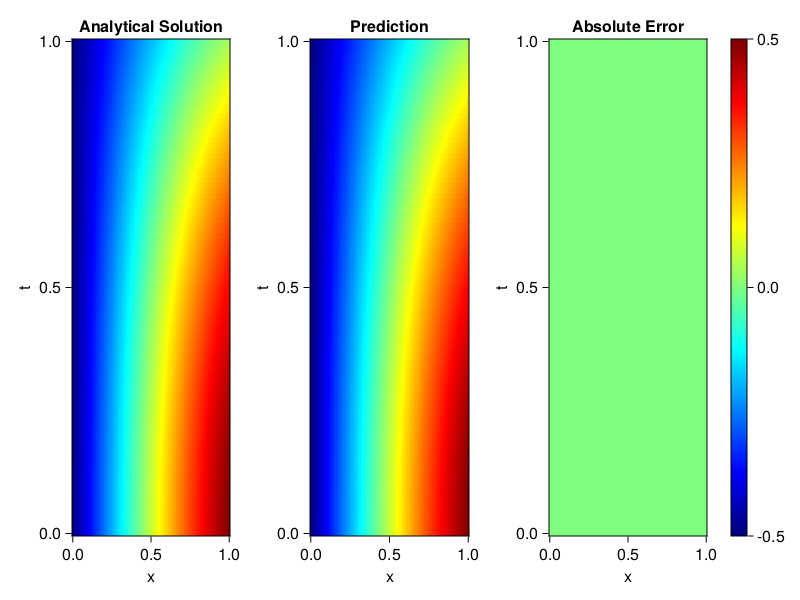

Inverse problem for the wave equation with unknown velocity field
We are going to sovle the wave equation.
using Sophon, ModelingToolkit, IntervalSets
using Optimization, OptimizationOptimJL
@parameters x, t
@variables u(..), c(..)
Dₜ = Differential(t)
Dₜ² = Differential(t)^2
Dₓ² = Differential(x)^2
s(x,t) = abs2(x) * sin(x) * cos(t)
eq = Dₜ²(u(x,t)) ~ c(x) * Dₓ²(u(x,t)) + s(x,t)
bcs = [u(x, 0) ~ sin(x),
Dₜ(u(x, 0)) ~ 0,
u(0, t) ~ 0,
u(1, t) ~ sin(1) * cos(t)]
domains = [t ∈ Interval(0.0, 1.0),
x ∈ Interval(0.0, 1.0)]
@named wave = PDESystem(eq, bcs, domains, [t,x], [u(x,t),c(x)])\[ \begin{align} \frac{\mathrm{d}^{2}}{\mathrm{d}t^{2}} u\left( x, t \right) =& c\left( x \right) \frac{\mathrm{d}^{2}}{\mathrm{d}x^{2}} u\left( x, t \right) + \cos\left( t \right) \left|x\right|^{2} \sin\left( x \right) \end{align} \]
Here the velocity field $c(x)$ is unknown, we will approximate it with a neural network.
pinn = PINN(u = FullyConnected((2,16,16,16,1), sin),
c = FullyConnected((1,16,16,1), tanh))
sampler = QuasiRandomSampler(500,100)
strategy = NonAdaptiveTraining(1, (10,10,1,1))NonAdaptiveTraining{Int64, NTuple{4, Int64}}(1, (10, 10, 1, 1))Next we generate some data of $u(x,t)$. Here we place two sensors at $x=0$ and $x=0.5$.
ū(x,t) = sin(x) * cos(t)
x_data = hcat(fill(0.0, 1, 50), fill(0.5, 1, 50))
t_data = repeat(range(0.0, 1.0, length = 50),2)'
input_data = [x_data; t_data]
u_data = ū.(x_data, t_data)1×100 Matrix{Float64}:
0.0 0.0 0.0 0.0 0.0 0.0 0.0 0.0 0.0 … 0.275281 0.267213 0.259035Finally we construct the inverse problem and solve it.
additional_loss(phi, θ) = sum(abs2, phi.u(input_data, θ.u) .- u_data)
prob = Sophon.discretize(wave, pinn, sampler, strategy; additional_loss=additional_loss)
@time res = Optimization.solve(prob, BFGS(), maxiters=1000)u: ComponentVector{Float64}(u = (layer_1 = (weight = [-0.709519699327069 1.1856386485540817; -0.6393159172451952 -0.7815110018160984; … ; -1.1948615790745931 1.5962260640157344; -0.6450401412225933 -0.5040890870471688], bias = [-0.08037070795779692; -0.10097401764825278; … ; 0.40968279240897254; -0.24577022708543161;;]), layer_2 = (weight = [-0.24755610559531002 -0.426320903223064 … 0.3059584934177274 -0.7429395762856826; -0.23317883438884346 0.6534548643666881 … -0.09415664021740298 0.21255745320917535; … ; -0.34868299254689744 0.32718254527984103 … -0.22244242325432462 0.22751379682373568; 0.01131004361330438 -0.39583666199945544 … -0.003734698312485634 0.44980411636305945], bias = [0.17432777059663077; -0.1784816006787159; … ; 0.09101411459731715; 0.14579250269345742;;]), layer_3 = (weight = [-0.666562622269628 0.2206528677800581 … -0.5540848191820805 -0.2692599792534205; -0.19317050352557974 -0.1471767653156867 … -0.4467087872398051 0.15468637740854926; … ; -0.25716345076585456 -0.23855717703954757 … -0.031127309934306027 0.3817722199939537; -0.314558247895191 0.26291702260702443 … 0.6300874449685603 0.21123945920285117], bias = [-0.013537906178473247; 0.08692954773034169; … ; -0.05484898650821673; -0.01714685972564317;;]), layer_4 = (weight = [0.4365722884692838 0.06527050568205903 … -0.5520983453690567 -0.4651831726220175], bias = [0.08883814750290789;;])), c = (layer_1 = (weight = [0.5370720277051753; 2.18884766383618; … ; -1.2718745564352092; -0.6608958358840834;;], bias = [0.05394831665194186; 0.49622874776254033; … ; -0.15677427629512192; -0.14006778612150303;;]), layer_2 = (weight = [0.29999664274298915 0.054082147877004855 … 0.3701112710829761 -0.6958811264601125; -0.3591608081956213 0.17343413660983792 … -0.48188540144753844 0.09798335088560467; … ; 0.012905061494609077 0.7495237809923343 … 0.2437378515300261 -0.4290565029423269; 0.028746286231932934 -0.43919934289372126 … 0.7119805049497819 -0.2788257216598938], bias = [-0.03756091219352507; -0.00020687881245991203; … ; 0.06281934632834392; -0.12121576367972284;;]), layer_3 = (weight = [0.874490189070775 0.027716465406338608 … 0.438574431080116 -0.8765429265453546], bias = [-0.2667820594996066;;])))Let's visualize the predictted solution and inferred velocity
using CairoMakie
ts = range(0, 1; length=100)
xs = range(0, 1; length=100)
u_pred = [pinn.phi.u([x, t], res.u.u)[1] for x in xs, t in ts]
c_pred = [pinn.phi.c([x], res.u.c)[1] for x in xs]
u_true = [ū(x, t) for x in xs, t in ts]
c_true = 1 .+ abs2.(xs) |> vec
axis = (xlabel="x", ylabel="t", title="Analytical Solution")
fig, ax1, hm1 = heatmap(xs, ts, u_true, axis=axis; colormap=:jet)
ax2, hm2= heatmap(fig[1, end+1], xs, ts, u_pred, axis= merge(axis, (;title = "Prediction")); colormap=:jet)
ax3, hm3 = heatmap(fig[1, end+1], xs, ts, abs.(u_true-u_true), axis= merge(axis, (;title = "Absolute Error")); colormap=:jet)
Colorbar(fig[:, end+1], hm3)
fig
fig, ax = lines(xs, c_pred)
lines!(ax, xs, c_true)
fig